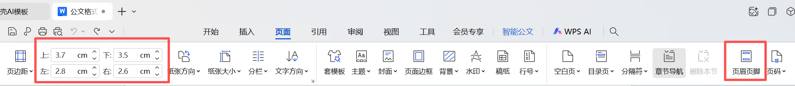
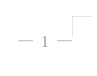

操作指南说明
本指南详细说明如何在WPS中实现GB/T 9704-2012标准规定的页面排版要求。请按照以下顺序操作：
重要提示
建议在开始撰写公文内容之前先进行页面设置，避免后期调整导致格式混乱。
所有参数必须严格按照国家标准设置，不得随意更改。
页边距设置
根据GB/T 9704-2012标准，公文页边距必须设置为：
| 参数名称 | 标准值 | 说明 |
|---|---|---|
| 上边距 | 3.7厘米 | 从页面顶部到正文第一行的距离 |
| 下边距 | 3.5厘米 | 从页面底部到正文最后一行的距离 |
| 左边距 | 2.8厘米 | 从页面左侧到正文左边缘的距离 |
| 右边距 | 2.6厘米 | 从页面右侧到正文右边缘的距离 |
| 页眉 | 1.5厘米 | 从页面顶部到页眉文字的距离 |
| 页脚 | 2.5厘米 | 从页面底部到页脚文字的距离 |
WPS操作步骤
1
打开页面设置
在WPS文字中，点击顶部菜单栏的 "页面" 选项卡。
操作路径：页面 → 页边距 → 自定义页边距
2
设置页边距参数
在"页面设置"对话框中：
- 找到"页边距"界面
- 在"页边距"区域的四个输入框中，分别输入标准值：
- 上：3.7厘米
- 下：3.5厘米
- 左：2.8厘米
- 右：2.6厘米
3
设置页眉页脚边距
在同一个"页面设置"对话框中，切换到"版式"选项卡：
- 找到"页眉"输入框，输入 1.5厘米
- 找到"页脚"输入框，输入 2.5厘米
- 确保"应用于"选项设置为 "整篇文档"
4
确认并应用设置
完成所有参数输入后：
- 点击对话框底部的 "确定" 按钮
- 系统将应用页面设置到当前文档
- 检查页面标尺显示是否正确反映新的边距设置

页面设置对话框示意图
页码设置（简便方法）
根据GB/T 9704-2012标准，公文页码必须设置为：
页码规范要求
字体：宋体四号字
格式："— 1 —"样式（前后各一个全角破折号，页码居中）
位置：奇数页在右下角，偶数页在左下角（使用"双面打印1"选项自动实现）
WPS简便操作步骤
1
快速设置页码格式和位置
核心操作： 使用WPS的"双面打印1"选项自动设置奇偶页不同位置
- 双击文档页面底部页脚区域，进入页脚编辑模式
- 在出现的"页眉和页脚工具"选项卡中，点击 "页码设置" 按钮
- 在弹出的页码设置对话框中，选择 "双面打印1" 选项
- 在样式选择区域，找到并选择 "— 1 —" 样式（带破折号的样式）
- 在"应用范围"下拉菜单中，选择 "整篇文档"
- 点击 "确定" 按钮应用设置
此时页码已自动插入，奇数页在右下角，偶数页在左下角，格式为"— 1 —"
2
设置页码字体格式
- 保持页脚编辑模式，选中页码文本框中的页码（数字和破折号）
- 右键点击选中的页码，从右键菜单中选择 "字体"
- 在弹出的字体对话框中：
- 设置中文字体为 "宋体"
- 设置字号为 "四号"
- 确保字体颜色为黑色
- 点击 "确定" 应用字体设置
- 重复上述步骤，检查并设置所有页面的页码字体格式
现在页码格式完全符合国家标准：宋体四号字，"— 1 —"样式，奇偶页位置正确
3
退出并检查效果
- 双击文档正文区域，退出页脚编辑模式
- 翻看文档，检查奇数页和偶数页的页码位置是否正确
- 确认所有页码的字体和格式是否符合要求
- 如需调整，可再次双击页脚区域进入编辑模式进行修改

奇数页页码在右下角，偶数页页码在左下角，格式为"— 1 —"
方法优势
1
一步设置位置："双面打印1"选项自动处理奇偶页不同位置
2
自带正确格式：直接选择"— 1 —"样式，无需手动添加破折号
3
操作简单快捷：仅需2个主要步骤即可完成全部设置
常见问题与解决
问题排查
Q1
找不到"双面打印1"选项
可能原因：WPS版本不同，选项名称可能有差异
解决方法：
- 在页码设置对话框中，寻找类似"奇偶页不同"或"对称页边距"的选项
- 如果找不到，可手动设置：先插入普通页码，然后在"页眉和页脚工具"中勾选"奇偶页不同"，再分别调整位置
Q2
页码字体设置不生效
可能原因：选中了整个文本框而不是仅页码数字
解决方法：
- 确保只选中页码数字部分（不包括破折号）
- 或者选中整个页码（包括破折号），统一设置为宋体四号
- 检查是否应用到了所有页码（可能需要逐页检查）
Q3
页边距设置后正文位置不对
可能原因：文档中已有段落格式设置影响了实际显示效果
解决方法：
- 全选文档（Ctrl+A）
- 点击"开始"选项卡中的"清除格式"按钮
- 重新设置页边距
- 最后设置段落格式